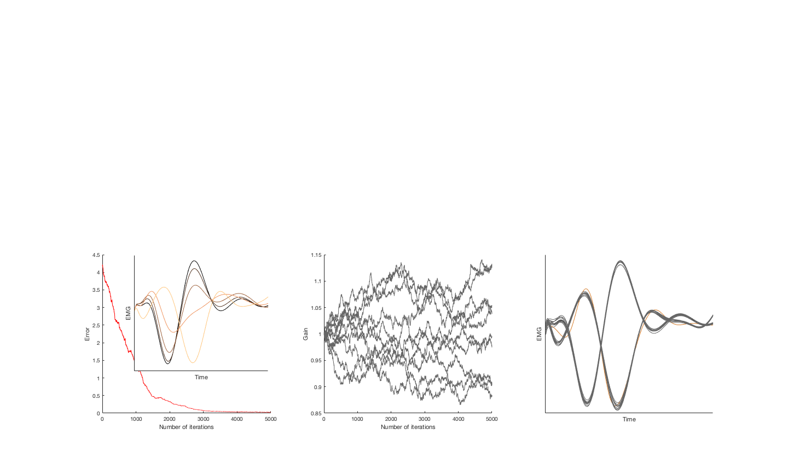

This is the readme for the models associated with the paper:
Stroud JP, Porter MA, Hennequin G, Vogels TP (2018) Motor primitives in space and time via targeted gain modulation in cortical networks Nature Neuroscience
This MATLAB code was contributed by JP Stroud.
Usage:
Expand the archive, start MATLAB and change to the folder created by expanding the archive.
To recreate a figure similar to the lower 3 panels in figure 1 type on the MATLAB command line:
train_neuronal_gains
After about a minute this figure will be generated:
